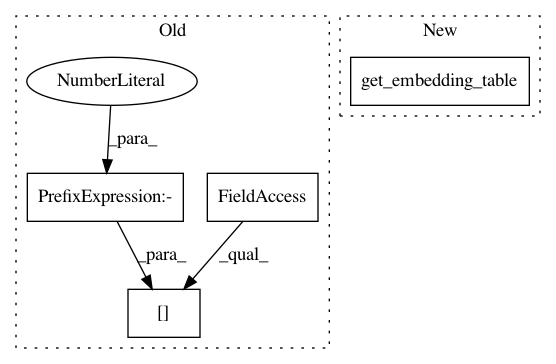

802488f1dc363b326437dd05341b8310cfe786c3,official/nlp/modeling/models/bert_pretrainer.py,BertPretrainer,__init__,#BertPretrainer#Any#Any#Any#Any#Any#Any#Any#,58
Before Change
self.masked_lm = networks.MaskedLM(
num_predictions=num_token_predictions,
input_width=sequence_output.shape[-1],
source_network=network,
embedding_table=embedding_table,
activation=activation,
After Change
inputs.append(masked_lm_positions)
if embedding_table is None:
embedding_table = self.encoder.get_embedding_table()
self.masked_lm = layers.MaskedLM(
embedding_table=embedding_table,
activation=activation,
initializer=initializer,
In pattern: SUPERPATTERN
Frequency: 3
Non-data size: 4
Instances
Project Name: tensorflow/models
Commit Name: 802488f1dc363b326437dd05341b8310cfe786c3
Time: 2020-06-15
Author: hongkuny@google.com
File Name: official/nlp/modeling/models/bert_pretrainer.py
Class Name: BertPretrainer
Method Name: __init__
Project Name: tensorflow/models
Commit Name: 802488f1dc363b326437dd05341b8310cfe786c3
Time: 2020-06-15
Author: hongkuny@google.com
File Name: official/nlp/modeling/losses/weighted_sparse_categorical_crossentropy_test.py
Class Name: ClassificationLossTest
Method Name: create_lm_model
Project Name: tensorflow/models
Commit Name: 802488f1dc363b326437dd05341b8310cfe786c3
Time: 2020-06-15
Author: hongkuny@google.com
File Name: official/nlp/modeling/models/bert_pretrainer.py
Class Name: BertPretrainerV2
Method Name: __init__